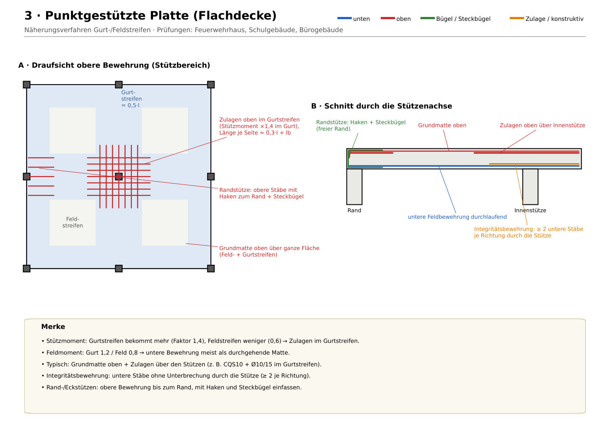
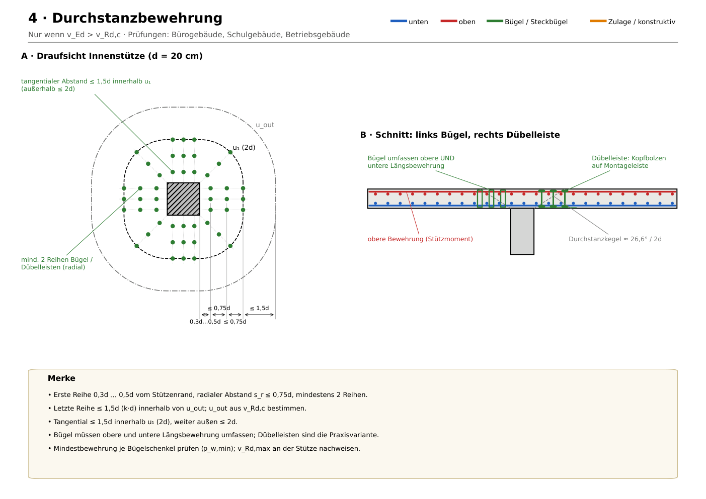
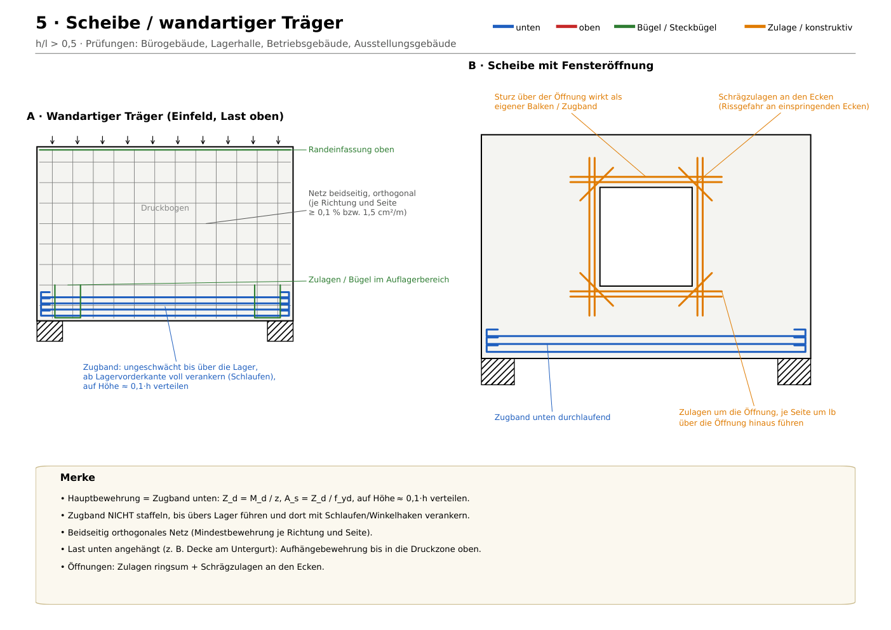
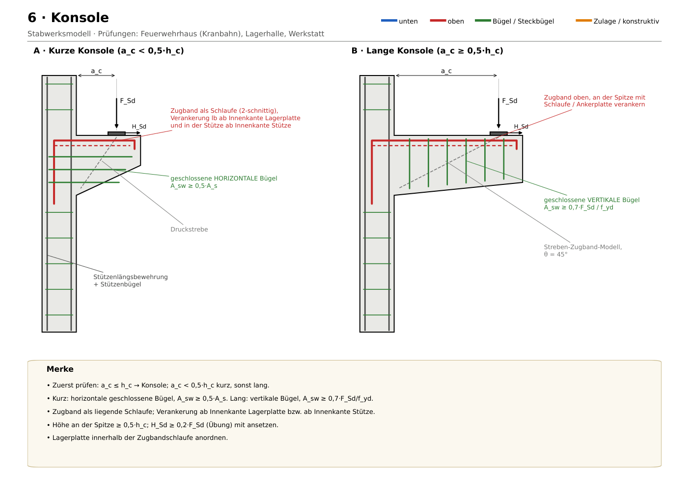
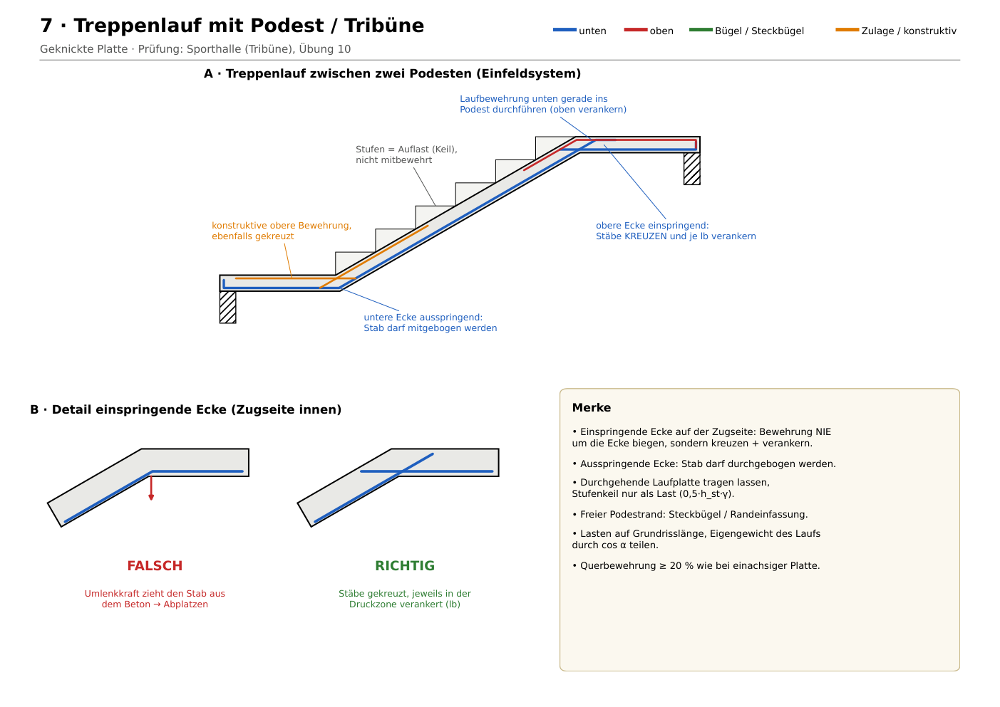
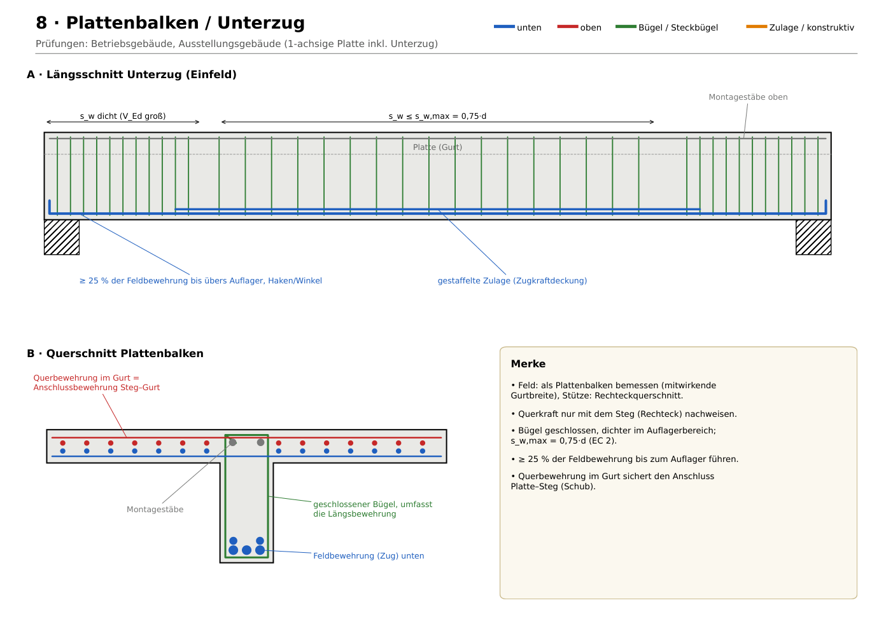

Je Bauteil zwei schematische Skizzen und die Regeln, die im Bewehrungsplan der Prüfung abgefragt werden. Farbcode überall gleich: blau unten, rot oben, grün Bügel und Steckbügel, orange Zulagen und konstruktive Bewehrung.
2 · Zweiachsig gespannte Platte: kurze Richtung außen, Drillbewehrung oben und unten an gelenkigen Ecken (0,3·lx), Stützbewehrung über dem Durchlaufrand.

3 · Punktgestützte Platte: Grundmatte oben plus Zulagen im Gurtstreifen, Integritätsbewehrung unten durch die Stütze, Randstütze eingefasst.

4 · Durchstanzbewehrung: erste Reihe 0,3d–0,5d, radial ≤ 0,75d, letzte Reihe ≤ 1,5d innerhalb uout, Bügel umfassen beide Lagen.

5 · Scheibe / wandartiger Träger: Zugband ungestaffelt bis übers Lager und verankert, beidseitiges Netz, Zulagen und Schrägzulagen an Öffnungen.

6 · Konsole: kurz (ac < 0,5·hc) horizontale Bügel, lang vertikale Bügel; Zugband als Schlaufe, Verankerung ab Innenkante Lagerplatte.

7 · Treppe / Tribüne: an der einspringenden Ecke Stäbe kreuzen und verankern, nie um die Ecke biegen. Stufen nur als Auflast.

8 · Plattenbalken / Unterzug: Bügel dichter am Auflager, sw,max = 0,75·d, ≥ 25 % der Feldbewehrung bis zum Auflager, Querbewehrung im Gurt.